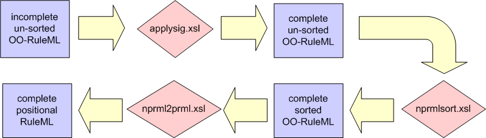
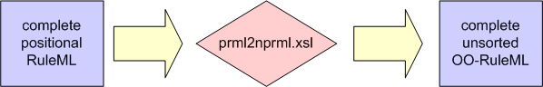

--> |
| R u l e M L |
<-- |
This is a set of (XSLT-specified) translators for transforming RuleML between its Positional (version 0.82) and Object-Oriented (version 0.83) specifications.
The transformation of Object-Oriented RuleML into Positional RuleML occurs in a three step XSLT translation process. The task of of transforming RuleML has been modularized into a translator which applies the signature for each relation to the metaroles (_r) found within each implementation of the relation; a translator that sorts an object centred RuleML file; and a translator which positionalizes the RuleML by removing all of the metaroles and leaving the contents in a positionalized version of the source document.
The transformation of Positional RuleML into Object-Oriented RuleML occurs in a one step XSLT translation. The translator inserts metaroles into the Positional RuleML based on an object-oriented signature.
|
applysig.xsl |
nprmlsort.xsl |
nprml2prml.xsl |
prml2nprml.xsl |
applysig.xsl -> This translator takes a defined, object centred, signature and applies this signature to the implementation of each atom within a fact, imp or query. The signature specifies the metaroles (_r) which are required for each fact, imp, or query. Any metaroles that are not defined in the implementation of the relation are inserted as an empty ind (<ind/>), or if they are missing from within a body, an empty var (<var/>). The output of the translator is a RuleML file in which each implementation of an atom matches the corresponding signature declaration.
The signature is a tag pair that defines a template for the named atom which it describes. The formula attribute describes whether the signature applies to a fact, imp or cterm. The world attribute is not currently used but has been implemented as a way to declare the scope of the signature(word=open or closed). The order attribute dictates whether the order of the signature will be applied to each atom (order="sorted"), or whether a predefined sorting order should be applied (order="unsorted").
An Example:
The empty ind designates untyped fillers for the slots with the roles height, width, length.
<signature formula="fact|imp" world="open" order="unsorted">
<_head>
<atom>
<_opr>
<rel>size</rel>
</_opr>
<_r n="height">
<ind/>
</_r>
<_r n="width">
<ind/>
</_r>
<_r n="length">
<ind/>
</_r>
</atom>
</_head>
</signature>
nprmlsort.xsl -> This translator sorts all of the metaroles within an atom. The sorting is based on the signature declaration for each atom. If the order attribute of the corresponding signature is equal to 'sorted', then the metaroles will be sorted based on the positional order of metaroles in the signature. If the order attribute is equal to 'unsorted' then the metaroles, and the signature will be sorted canonically by the name (n) attribute of the metarole and the order attribute will be set to 'sorted'. ind or var terms which occur within the instance of an atom as positional terms are not sorted, and remain in their original Positional context. All Positional terms currently occur at the beginning of the sorted, object-oriented metaroles. The output of the translator is a RuleML file in which the metaroles are sorted by name within the signature declaration and within the implementation of each atom.
nprml2prml.xsl -> This translator removes all of the metaroles within an atom, leaving the contents of the metaroles in a positionalized, sorted order. The output of the translator is a RuleML file in which the RuleML is completely Positional, based on the sorted order of nprmlsort.xsl translator, in which undefined metaroles have been filled in by empty ind or var terms by the applysig.xsl translator. The positionalized file contains no metaroles.
prml2nprml.xsl -> This translator takes a Positional RuleML file containing an Object-Oriented signature and applies the signature to the Positional RuleML. The output of the translator is a RuleML file in which the RuleML is Object-Oriented, having a metarole implemented within an atom for each metarole declared in the corresponding signature. The output is unsorted. Any Positional terms occurring within a specific implementation are preserved, in order, at the end of the object centred block.
|  |
The three translators, applysig.xsl, nprmlsort.xsl, and nprml2prml.xsl must be piped together in order to completely transform Object-Oriented RuleML to Positional RuleML file. Each translator performs operations on the same set of nodes and is dependant on the output of the translator that is applied before it. The applysig.xsl translator applys the specified object-oriented signature to all of the metaroles ensuring that the output is a complete RuleML file and adheres to the provided signature. Once the signature has been applied to the RuleML, it can be sorted by nprmlsort.xsl. This ensures that when the metaroles are removed by nprml2prml.xsl, there is a guaranteed order that is maintained.
|  |
The prml2nprml.xsl translator performs the transformation of Positional RuleML (containing an object-oriented signature) to Object-Oriented RuleML in a single step. The translator loops through each atom or cterm and applies the signature declaration that responds to the implimentation. The sorted order is not maintained during the transformation and the output is unsorted, Object-Oriented RuleML.
| Input Files | |||
|---|---|---|---|
| applysig.xsl | nprmlsort.xsl | nprml2prml.xsl | |
| simpleCase.xml | Complete simpleCase.xml | Sorted simpleCase.xml | Positionalized simpleCase.xml |
| ctermCase.xml | Complete ctermCase.xml | Sorted ctermCase.xml | Positionalized ctermCase.xml |
| complexCase.xml | Complete complexCase.xml | Sorted complexCase.xml | Positionalized complexCase.xml |
The output of each translator is listed under the translators name in the above table. It is used as input for the next translator in the sequence.
| Input Files | |
|---|---|
| prml2nprml.xsl | |
| Positional simpleCase.xml | Object-Oriented simpleCase.xml |
| Positional ctermCase.xml | Object-Oriented ctermCase.xml |
| Positional complexCase.xml | Object-Oriented complexCase.xml |
Site Contact:
Harold Boley.
Page Version: 2003-03-28
"Practice what you preach": XML source of this homepage at oo2prml.xml (oo2prml.xml.txt);
transformed to HTML via the adaptation of Michael Sintek's SliML XSLT stylesheet at homepage.xsl (View | Page Source)